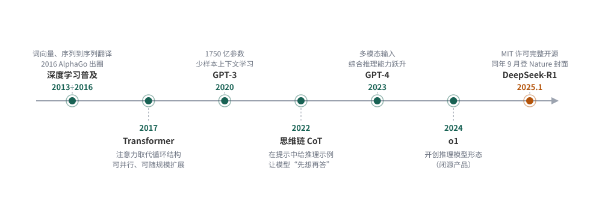
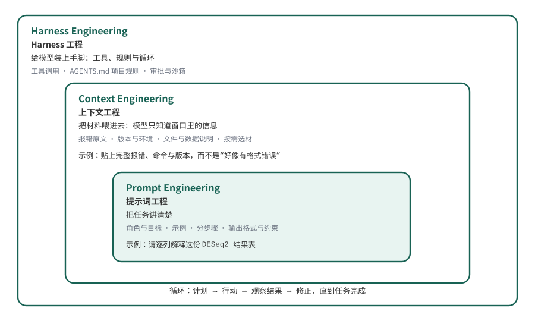

12 拥抱大语言模型
本章提要
本章不再展开新的分析技术，而是把全书一直在使用的工具——大语言模型——放到舞台中央。我们先回顾自然语言处理走过的路，看大语言模型如何在深度学习、超大规模预训练与思维链的接力中出现”智能涌现”，又为什么说它虽然不是人类的智能、却已经能够真正参与工作；随后借软件工程的经典文章《没有银弹》讨论 AI 的能力边界：技术上的难可以被大模型快速消除，本质上的难仍然要靠人来判断。在此基础上，我们学习用好大语言模型的三个阶段——提示词工程、上下文工程与 Harness 工程，理解为什么对模型要”驾驶而非放手”。最后以 ZCode 为例，从拷问需求、建立项目记忆，到逐轮实现、测试与复盘，完整走一遍智能体项目实战。读完本章，你应该能放心地把重复劳动交给 agent，同时清楚哪些判断必须由自己负责。
12.1 从自然语言处理到大语言模型的智能涌现
看清大语言模型从哪里来，理解它”会做事”的能力来源。
从专用小模型到通用大模型
在大语言模型（Large Language Model，LLM）出现之前，让计算机处理自然语言是一件”一个任务一套办法”的事。自然语言处理（Natural Language Processing，NLP）的经典任务包括中文分词、词性标注、命名实体识别、机器翻译、情感分析和文本分类。生物信息学也用这些技术做文献挖掘，例如从 PubMed 的海量论文里抽取”某个基因与某种疾病相关”的线索。每个任务都要标注专门的数据、设计专门的的特征、训练专门的模型；换一个任务，这些工作基本重来。
2016 年是一个转折点。这一年 3 月，AlphaGo 以 4:1 战胜李世石，深度学习从学术圈走向公众视野。在自然语言处理领域，深度学习其实早已铺开——词向量、序列到序列翻译、注意力机制相继出现——但”一个任务一套模型”的格局没有变。真正的转折发生在 2017 年：Google 的团队提出 Transformer 架构，用注意力机制完全取代了循环结构1。这个架构有两个后来被证明极其关键的特性：可以并行计算，因此能够用海量文本训练；可以随规模扩展，模型越大、效果越好。
沿着”预训练＋规模化”的路线，参数量从亿级一路涨到千亿级。2020 年，OpenAI 发布拥有 1750 亿参数的 GPT-32，它展示了一种前所未有的能力：少样本学习（few-shot learning）——不再需要为每个任务微调模型，只要在提示（prompt）里给几个例子，它就能照着做新任务。“一个任务一套模型”的时代就此让位给”一个通用大模型做所有任务”的时代。
思维链与推理模型
GPT-3 虽然什么任务都能”照猫画虎”，但做数学题、多步推理时仍然频繁出错。2022 年初，Google 的研究者发表了思维链（Chain-of-Thought，CoT）提示方法：在提示里给出带中间推理步骤的示例，模型就会跟着”想一步再答”，在数学、常识和符号推理任务上的表现大幅提升3。这一发现说明：大模型的能力不只藏在参数里，也藏在你怎样让它工作里——这个认识为后面 12.3 节的三个阶段埋下伏笔。
2023 年 3 月，GPT-4 发布，能够同时接受图像和文本输入，综合推理能力再次跃升4。很多人从这一刻开始真正把大模型当作工作工具，而不只是聊天玩具。2024 年，OpenAI 发布 o1，开创了”推理模型”这一形态——模型在给出答案前先进行长链条的内部思考。但 o1 是闭源产品。
2025 年 1 月，DeepSeek 发布 R1，并采用 MIT 许可完整开源5。R1 是第一个把当时最先进的推理能力连同训练方法一起开源的模型：论文显示，模型的推理能力可以通过纯强化学习激发出来，甚至不需要人工标注的思维链数据去微调；这项工作后来登上 Nature 封面。它的意义不只是”多了一个免费模型”：全世界的团队都能在 R1 的基础上研究、改进和部署，开源模型的门槛从”能用”一步跨到”最强梯队”，成本也随之一路下降。今天你在本地或免费服务里用的模型，很可能已经超过两年前的付费旗舰。
图 12.1 把这段历程排成一条时间线。值得注意的规律是：每一次跃迁都建立在此前的积累上——没有深度学习的普及就没有 Transformer 的快速采纳，没有超大规模预训练就没有少样本学习，没有思维链的发现就谈不上推理模型的训练目标。

涌现的”智能”与它的边界
随着规模跨过某个阈值，大模型出现了小模型完全不具备的能力——不训练就能按示例做新任务、跟随指令、多步推理。研究者把这种现象称为”智能涌现”（emergent abilities）。这里要保持一个清醒的表述：涌现出来的不是人类的智能。机制上，大模型做的仍然是”预测下一个词”；它没有体验、没有目的，也不知道自己什么时候在编造。“涌现是否只是度量方式的假象”在学界仍有讨论，但工程界不太纠结这个争论，因为另一个事实更直接。
大语言模型通过超大规模预训练获得了通用语言与知识处理能力，配合思维链等使用方式可以完成大量过去需要专门系统的任务；但它仍然是基于概率的下一个词预测，会产生”一本正经的胡说”（幻觉），也不会因为规模变大而自动获得目的、体验或对真伪的自我觉察。
工程结论：把它当作能力极强但需要检查的协作者，而不是无所不知的权威。
我自己经历过一个直观的对比。GPT-3 刚发布时，我让它推荐几篇某个方向的文献，返回的标题、作者、期刊看起来像模像样，逐条去查，几乎一篇都不存在——那一代模型离”能干活”很远。而今天，同样是我，正在用大模型驱动的智能体（agent）编写和维护包含构建、校验、自动部署在内的完整软件项目；你在 12.4 节会看到，agent 现场写出一个可运行、带测试的质控工具。
所以我的态度是：拥抱它。以大语言模型为代表的 AI 技术，是这个时代给每一个人的礼物，也是机遇。它不会因为你的犹豫而放慢脚步，却会因为你善用而放大你的能力——尤其是生物信息学这样天天与文档、代码、数据格式打交道的行业。拥抱不等于迷信，下一节我们就来划清它能做什么、做不了什么。
12.2 AI的能力边界
判断一个任务的瓶颈在哪，就能预期 AI 能帮到哪一步。
《没有银弹》的两种复杂度
1987 年，《人月神话》的作者布鲁克斯（Fred Brooks）发表了一篇软件工程的经典文章：《没有银弹——软件工程中的本质与偶然》（No Silver Bullet — Essence and Accident in Software Engineering）6。银弹（silver bullet）是欧洲传说中杀死狼人的唯一武器，引申为”一招解决所有问题的万能解”。布鲁克斯的著名论断是：
未来十年内，没有任何单一的技术进展或管理方法，能够仅凭自身让软件的生产力、可靠性和简洁性获得一个数量级（十倍）的提升。
为什么这么悲观？他的论证借用了亚里士多德的一对古老概念，把软件的困难分成两类：
- 本质的困难（essence）：软件固有、无法绕开的困难——问题本身的复杂度、与真实世界的一致性、需求的无休止变化、以及不可见的抽象结构。
- 偶然的困难（accident）：制作软件过程中碰到的、但并非固有的困难——工具难用、语言低效、流程繁琐。
布鲁克斯观察到：软件工程此前几十年的生产力提升，几乎全部来自消除偶然的困难（高级语言、集成环境、图形界面），这部分的红利快被吃完了；而本质的困难没有银弹，“造软件永远会是难的”。
这篇文章是 1987 年写的，但它讨论的问题今天读来毫不陌生。把”软件”换成”科学研究”、“生信分析”，框架照样成立。而大模型的出现让这个问题有了新的紧迫感：它是人们找了四十年的那颗银弹吗？
技术上的难：大模型能快速消除
把布鲁克斯的两类困难翻译成更朴素的说法，这个世界上的问题有两种难。
第一种是技术上的难：事情本身有明确做法，障碍只是信息与操作——文档繁琐、不会语法、环境配置、样板代码、正则表达式、格式转换。这类困难对应布鲁克斯说的”偶然的困难”。
大语言模型恰好是消除这类困难的利器，因为它在人类语料的海量”做法”上训练过，而且结果可验证。生物信息学的日常几乎被这类任务填满：
- 读不懂某个工具的文档，让模型逐段解释；
- 不会写一行流的 bash 命令，描述需求让模型生成；
- 把一段 R 代码翻译成 Python，或反过来；
- 配置 conda 环境、解决依赖冲突；
- 为 Snakemake 工作流写样板规则；
- 解释一段看不懂的报错。
这些任务的共同特征：任务本身可以说清楚，判断对错的标准明确，出了错容易发现。大模型已经把这类任务的时间成本压缩了一个数量级——这恰恰是布鲁克斯认为银弹才能做到的事，只不过只在”偶然”这一半成立。
本质上的难：大模型帮不了的部分
第二种是本质上的难：问题的答案不在任何语料里——设计一款抗癌药、提出一个新的生物学假说、判断某个差异表达结果反映的是生物学还是批次效应、决定一个结论的边界画在哪里。这类困难对应”本质的困难”：它们需要提出问题、设计实验、权衡证据，而这些正是布鲁克斯说的无法用工具批量消除的部分。
大模型对这类问题不是没有用，但用途限于加速其中的信息环节：帮你检索和整理已知文献、列出候选假说、把权衡摆到桌面上。注意，它给出的每一个”答案”都可能是自信的错——因为答案本来就不在语料里，模型只能把最像答案的东西生成出来。最终按下判断键的，必须是你。
表 12.1 给出一个可以随身携带的判断框架。
| 维度 | 技术上的难 | 本质上的难 |
|---|---|---|
| 典型任务 | 配环境、写正则、翻译代码、读文档 | 设计药物、提假说、判断批次效应、定结论边界 |
| 答案在哪 | 在人类积累的语料中 | 不在任何语料中 |
| 大模型角色 | 直接完成，快速消除 | 只加速信息环节，不能替代判断 |
| 出错方式 | 少数情况幻觉，易验证 | 一本正经地编，验证代价高 |
| 你要做的 | 验证输出可用 | 守住判断权，把模型当顾问 |
遇到一个任务，先问一句：这个任务的瓶颈是信息与操作，还是知识与判断？ 前者尽管交给模型，后者模型只能陪跑。这也是全书反复强调的那条线在 AI 时代的延伸——“能运行”从来不等于”能得出正确的结论”，工具跑通了，结论的边界仍然要由理解数据的人来划定。第 11 章结尾留下的那道题——“AI 给出的统计方案如何核查”——答案就在这张表里：把它的方案拆开，逐项问哪些只是技术上的顺手，哪些悄悄替你做了本质的判断。
12.3 如何用好大语言模型
把大模型从”聊天对象”变成”可靠协作者”。
用法演进的三个阶段
大语言模型出生以来的使用方式，大致经历了三个阶段：提示词工程、上下文工程、Harness 工程。它们不是互相取代，而是不断叠加——每个新阶段都把前一个阶段包进来，见 图 12.2。

提示词工程（prompt engineering）流行于 2022 年前后：把任务说明写得清楚——给角色、给例子、分步骤、定输出格式。它解决的问题是”任务没说清”。
上下文工程（context engineering）在 2025 年由 Karpathy 的一篇帖子推广开来，他把它定义为”为下一步在上下文窗口里放进恰好正确的信息的精密艺术与科学”7。它解决的问题是”材料没给全”：模型只知道你提供给它的上下文，报错要贴原文、版本要交代、文件要给到，同时窗口有限，塞什么、不塞什么本身就是设计。
Harness 工程（harness engineering，harness 原意是”挽具”，这里指模型的运行环境）在 2025 年底到 2026 年初进入主流8。它解决的问题是”模型不能动手”：给模型装上工具——读写文件、执行命令、检索网络——再配上规则与循环，让它自己完成多步骤任务。
智能体（agent）＝大模型＋挽具（harness）。模型负责理解和生成；harness 是模型之外的一切——能调用哪些工具、遵循哪些规则（AGENTS.md）、按什么循环工作（计划→行动→观察→修正）、在什么边界内被授权（审批与沙箱）。
同一个模型配不同的 harness，表现出的”能干程度”天差地别；优化 harness 往往比换更大的模型更划算。
三个阶段在分工上的对照见 表 12.2 。
| 阶段 | 你提供什么 | 典型动作 | 对应失败模式 |
|---|---|---|---|
| 提示词工程 | 清晰的任务说明 | 给角色、示例、分步、格式 | 指令含糊，答非所问 |
| 上下文工程 | 恰好的材料 | 贴报错原文、版本、文件、数据说明 | 关键信息缺失，模型只能猜 |
| Harness 工程 | 工具、规则与循环 | AGENTS.md 项目记忆、skill、审批控制 | 无约束地乱改，错误层层累积 |
提示词工程：把任务讲清楚
提示词工程的全部要义可以用一句话概括：把任务讲到一个人不用追问就能接手的程度。具体要素：交代角色与目标、提供输入材料、给出示例、复杂任务拆步骤、规定输出格式与约束。
需求：看不懂一段 DESeq2 差异分析的结果表。
- 差的提问：“帮我看看这个表。”——模型不知道表在哪、列是什么、你想知道什么。
- 好的提问：“这是一份 DESeq2 的
results()输出，列有 baseMean、log2FoldChange、lfcSE、stat、pvalue、padj。请逐列解释含义和单位，说明 padj 是怎么从 pvalue 校正来的，并指出按padj < 0.05且|log2FoldChange| > 1筛选时的注意事项。下面是前 3 行数据：（略）”
练习： 把第二个提问里的要素（角色／材料／问题／输出要求）逐项标出来，再用同样的结构为”解释一段报错信息”写一个提问。
提示词能解决的只是”说清楚”。如果问题出在材料没给全，写得再漂亮也没用——那是下一阶段的事。
上下文工程：把材料喂进去
模型只有上下文窗口里的信息。三条实践中最立竿见影的原则：
- 给原文，不给转述。 排错时贴完整报错（而不是”好像有个格式错误”）、贴你执行的确切命令、贴期望结果与实际结果的对照。第 2 章排错一节讲的”问对问题带三样东西”，在这里原样适用。
- 交代版本与环境。 同一个函数在不同版本里参数默认值可能不同；
sessionInfo()、pip list的输出、参考基因组版本，都是模型的眼睛。 - 按需选材，而不是全部塞入。 窗口有限，无关材料会稀释关键信息。给一个 200 行文件里相关的 20 行，通常比整份文件加一句”自己找”更好；当然，如果工具能让模型自己读文件（12.4 节的 agent 就可以），就把选材权交给它。
Harness 工程：给模型装上手脚
当模型能读写文件、执行命令，使用方式就完全变了：你不再把材料复制进对话，而是让它到项目里自己拿；它不再只给建议，而是直接改代码、跑测试、看输出、再修正。让这套循环可靠运转的配置工作，就是 Harness 工程。对初学者来说，最重要的三件事：
AGENTS.md 项目记忆。 在项目仓库根目录放一个 AGENTS.md，写清楚项目目的、常用命令、目录结构、代码约定和注意事项。主流工具（ZCode、Claude Code、Codex、Cursor 等）都会在每次会话自动读取它——2025 年它已经成为事实标准，数以万计的项目在用9。它一次写成，此后每一轮对话都不必重复交代背景，是性价比最高的上下文工程。
Skill（技能）。 把重复的工作流程固化成一段可调用的说明，起个名字，用的时候一句话调用。比如 12.4 节要用的 grill-me，就是”拷问你的计划直到把需求问清”的技能。
审批与沙箱。 默认模式下，agent 读写文件、执行命令前要经过你批准；熟练之后可以放宽，但权限越自动，事后的验证越要认真。宁可慢一点，也不要让模型在没有围栏的地方奔跑。
驾驶而非放手：控制、验证与版本管理
LLM 需要大量的调试和控制，不能完全交给它。模型会幻觉、会忘记几轮之前的要求、会在你不知道的地方”顺手”改掉一行关键代码，而且这些都发生得非常有信心。agent 的每一次改动都落在你的项目里——放权越多，检查越不能少。
把 agent 当成一位手速极快、知识面极宽、但偶尔自信犯错的新同事来管理，需要三个习惯：
- 审查每一轮改动。 用
git diff逐行看它改了什么、为什么改，读不懂的改动当场问。第 2 章 Git 一节讲过，git diff就是”人审查 AI 工作”的基本工具。 - 小步提交。 一轮对话一个提交，说明写清楚。改坏了随时回退，好的改动沉淀下来。版本管理的具体操作第 2 章 2.6 节已经讲过，这里强调的是纪律：提交粒度就是你的后悔药粒度。
- 用运行结果验证。 “代码看起来对”不算数——运行它，看输出，核对统计口径。这也是本书每一章都在练的：能运行不等于能得出正确结论。
12.4 智能体项目实战
把前三节的认识变成一次完整的动手经验。
这一节我们用 ZCode 真实做一个与本书内容相关的项目：一个 FASTQ 质检小工具。它读取 FASTQ 文件，统计 reads 数量、长度分布、GC 含量、Q20/Q30 比例和平均质量，输出一份 Markdown 报告——正是第 3 章 FASTQ 格式与第 5 章质控思想的浓缩。项目小而完整：有数据生成、有核心代码、有测试、有版本历史，纯 Python 标准库实现，你在自己的电脑上可以完整复现。本节所有指令、代码、输出和提交记录都来自一次真实会话的实录，仅在篇幅上做了节选。
准备：项目、环境与版本控制
工具准备在第 2 章 2.5 节已经完成：安装 ZCode（zcode.z.ai 下载客户端），用 GLM Coding Plan 或 API key 登录。这里只回顾关键动作：在 ZCode 中新建一个空白文件夹 fastq-qc 并打开，这个文件夹就是 agent 的工作目录。
按第 2 章的项目目录约定建好骨架，并初始化 Git 仓库：
mkdir -p fastq-qc/{data,reports,tests}
cd fastq-qc
git init教学数据不下载真实测序文件，而是用一段 40 行的 Python 脚本生成模拟 FASTQ：固定随机种子 42，生成 300 条 reads，长度在 80–120 bp 之间波动，质量值从 5’ 端到 3’ 端逐渐衰减，GC 含量约 45%——模拟了真实数据的主要特征。注意这是模拟数据，仅用于教学；生成脚本 make_mock_fastq.py 与数据一起保存在项目里，任何人运行同一脚本都能得到逐字节相同的数据（这就是第 10 章讲的可复现性思想，用固定种子实现）。生成后我们独立校验过格式：1200 行恰好 300 条记录、序列与质量等长、质量字符都在合法范围内，统计值为 GC 45.14%、Q20 99.63%、Q30 64.48%——这组数字后面用来核对工具输出。
第 0 轮：用 grill-me 把需求问清楚
动手前最容易踩的坑，是需求自己都没想清。grill-me 是一个把”拷问式访谈”固化下来的技能：它会像一位较真的合作者，就你的计划一轮一轮提问，每题附上它的推荐答案，直到把每个含糊之处都问明白。在 ZCode 里输入：
/grill-me 我想给 FASTQ 文件做一个质控小工具，帮我梳理需求。它第一轮抛出的问题（节选）与我们的决定：
❓ Q1 - 输入数据：用真实测序数据还是教学数据？
➡️ 教学数据：脚本生成模拟 FASTQ，固定种子可复现。
❓ Q2 - 输出形式：报告给谁看，什么格式？
➡️ 给自己快速判断数据质量；Markdown 报告，不依赖浏览器。
❓ Q3 - 统计指标：算哪些，为什么是这些？
➡️ Reads 数、长度分布、GC、Q20/Q30、平均质量——与主流质控口径一致。
❓ Q4 - 依赖边界：允许引入哪些第三方库？
➡️ 只用 Python 标准库，兼容 3.8+，任何机器 python3 直接能跑。
❓ Q5 - 完成标准：怎么判断这个工具"做好了"？
➡️ 模拟数据端到端跑通；单元测试覆盖正常与异常输入；报告数值与独立校验一致。五问下来，“做个质控工具”这句模糊的话变成了五条可执行的规格。这一轮的本质是把提示词工程做在动手之前——12.2 节说 AI 擅长消除技术上的难，但前提是你能把它说清；说不清的部分，永远是你自己的瓶颈。
第 1 轮：建立 AGENTS.md 项目记忆
需求清楚了，先不写代码，先写项目的”说明书”。把第 0 轮的结论交给 agent：
按上面确认的需求，为这个项目创建 AGENTS.md，写清楚：项目目标、
常用命令（生成数据、运行质检、跑测试）、目录结构、代码约定
（只用标准库、兼容 Python 3.8+、报错带行号）、注意事项
（发现 bug 先写复现测试再修复）。再建 .gitignore 把 data/、
reports/ 和 __pycache__/ 排除出仓库。完成后做首次提交。agent 生成的 AGENTS.md 核心部分如下（完整文件见项目仓库）：
# AGENTS.md — fastq-qc 项目说明
## 常用命令
python3 make_mock_fastq.py # 生成模拟数据（种子 42）
python3 fastq_qc.py data/sample.fastq -o reports/qc_report.md
python3 -m unittest discover -s tests -v
## 代码约定
- 只用 Python 标准库，兼容 Python 3.8+；不引入第三方依赖。
- 质量值按 Phred+33 解码；FASTQ 记录为标准 4 行结构。
- 函数必须有 docstring；报错信息带行号，方便定位格式问题。
## 注意事项
- 发现程序 bug：先写一个能复现问题的测试，再修复，最后提交。
- 不要改动 data/ 下的任何文件；需要新数据时改生成脚本。注意两个设计：data/ 与 reports/ 不入库——数据可以由固定种子的脚本再生，生成的报告也可以由程序再生，仓库里只放”不能再生”的东西；AGENTS.md 里写下了”发现 bug 先写复现测试”的工作规则——下一轮它真的用上了。首次提交：
17d56c3 第1轮：建立项目说明与数据生成脚本，完成首次提交（你复现时提交号会不同，这不影响；看的是提交信息的写法——一行说清做了什么。）
第 2 轮：让 agent 实现核心功能
按 AGENTS.md 实现 fastq_qc.py：解析 FASTQ（4 行一条记录，Phred+33），
校验格式（行数、头行、序列与质量等长、质量字符范围），统计 reads 数、
长度分布（含字符直方图）、GC 含量、Q20/Q30 比例、平均质量，
生成 Markdown 报告。完成后在 data/sample.fastq 上运行并保存报告。agent 写出了约 150 行的 fastq_qc.py，其中格式校验一段是审查重点：
第一次运行，报错了：
错误：第 1 条记录第 10 个质量字符 'J' 超出 Phred+33 范围这是一个真实的失误：agent 初版把质量上限写成了 Q40，而生成脚本会产出 Q41（字符 J）。把报错原样贴回去，agent 查明 Illumina 1.8+ 的 Phred+33 合法范围是 Q0–Q41，把上限修正为 41（上面的代码是修正后的版本），重新运行：
Reads: 300 长度 80-120 bp GC 45.14% Q30 64.48%
报告已写入 reports/qc_report.mdGC 45.14%、Q30 64.48%，与准备阶段的独立校验完全一致——两组数字对上，这次运行才算通过。这一轮的审查要点有两个：一是读统计口径，GC 的分母是全部碱基而不是 reads 数，Q20/Q30 按碱基计——口径错半分，报告就全错；二是看它修复 bug 的方式，改的是校验上限这个”病因”，而不是把生成脚本的质量压到 40 以下来”掩盖症状”。两次提交：
345d458 第2轮：实现FASTQ解析、统计与Markdown报告生成
569ad09 第2轮修复：质量字符合法上限应为Q41(Illumina 1.8+)，首跑报错后修正第 3 轮：测试、边界与复盘
为 fastq_qc.py 补充 unittest 单元测试，至少覆盖：正常输入的统计
正确性（用小的手工数据核对 GC、Q20/Q30、平均质量）、空文件、
总行数不是 4 的倍数、序列与质量长度不一致、非法质量字符，
以及 Q41（'J'）合法的回归测试。运行全部测试并提交。test_empty_file (test_fastq_qc.TestComputeStats) ... ok
test_stats_values (test_fastq_qc.TestComputeStats) ... ok
test_good_input (test_fastq_qc.TestParseFastq) ... ok
test_illegal_quality_char (test_fastq_qc.TestParseFastq) ... ok
test_length_mismatch (test_fastq_qc.TestParseFastq) ... ok
test_q41_j_is_legal (test_fastq_qc.TestParseFastq) ... ok
test_truncated_file (test_fastq_qc.TestParseFastq) ... ok
----------------------------------------------------------------------
Ran 7 tests in 0.003s
OK七项测试全部通过，其中 test_q41_j_is_legal 就是把第 2 轮的 bug 固化成回归测试——以后任何人改动这段代码，错误都会被测试当场拦下。项目到此收尾，最终四条提交记录：
61098a3 第3轮：补充单元测试，覆盖正常输入、格式错误与Q41边界
569ad09 第2轮修复：质量字符合法上限应为Q41(Illumina 1.8+)，首跑报错后修正
345d458 第2轮：实现FASTQ解析、统计与Markdown报告生成
17d56c3 第1轮：建立项目说明与数据生成脚本，完成首次提交复盘整个项目，每一轮都有一个”必须由人把关”的环节：第 0 轮是需求与完成标准（agent 只能给推荐答案，取舍是你的）；第 1 轮是项目规则（什么入库、bug 怎么处理，这些约定决定了后续所有轮次的行为）；第 2 轮是统计口径与修复方式（改病因还是掩症状）；第 3 轮是测试覆盖是否戳中要害（有没有把真实出过错的地方变成回归测试）。这正是 12.2 节边界的具体化——写代码、配格式是技术上的难，agent 几乎包办；需求、口径、结论的质量，从头到尾是你的责任。
- 把工具跑到一份真实（小的）FASTQ 上，先检查它的报错信息能否帮你定位格式问题。
- 给报告增加”每个位置的平均质量”指标，画出 5’→3’ 衰减曲线的数据；观察它与模拟数据的差异。
- 思考题：如果要把这个工具接入第 10 章的 Snakemake 工作流，哪些设计要改？（提示：命令行参数、输入输出约定与退出码。）
这个项目做完，你拥有的不只是一个质控工具，而是一套可以迁移到任何课题的工作流：grill-me 定需求 → AGENTS.md 立规矩 → 逐轮下指令、审 diff → 测试与独立校验收尾。把它用在你自己的数据上——从下一份要处理的 FASTQ、下一个要写的小脚本开始。到这一章，本书的十二章就结束了，但你在 AI 时代的生信实践，才刚刚开始。
Vaswani A, et al. Attention Is All You Need. NeurIPS 2017。 arXiv:1706.03762。↩︎
Brown T B, et al. Language Models are Few-Shot Learners. NeurIPS 2020。 arXiv:2005.14165。↩︎
Wei J, et al. Chain-of-Thought Prompting Elicits Reasoning in Large Language Models. NeurIPS 2022。 arXiv:2201.11903。↩︎
OpenAI. GPT-4 Technical Report. 2023。 arXiv:2303.08774。↩︎
Guo D, et al. DeepSeek-R1 incentivizes reasoning in LLMs through reinforcement learning. Nature 645, 633–638 (2025-09-18 封面文章)。↩︎
Brooks F P. No Silver Bullet — Essence and Accident in Software Engineering. IEEE Computer, 1987 年 4 月。↩︎
Karpathy A. 关于 context engineering 的帖子，2025-06-25。↩︎
参见 Martin Fowler 的 Harness engineering for coding agent users 一文及相关工程博客（2025–2026）。↩︎